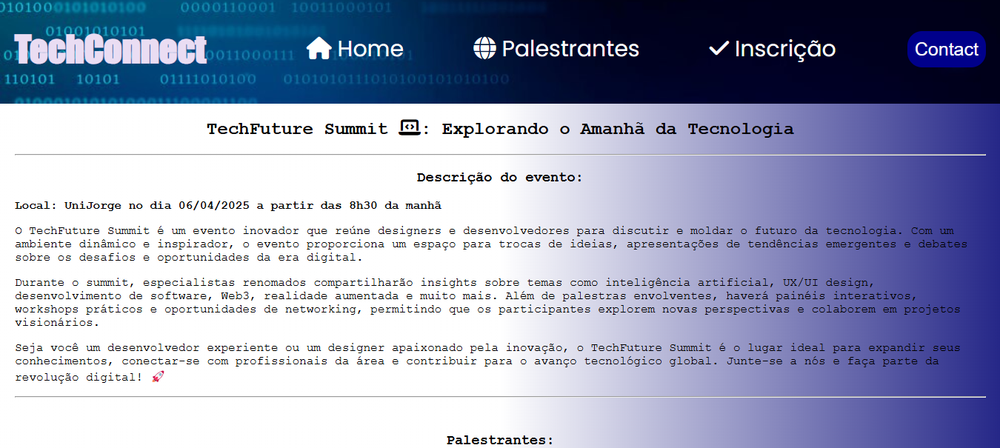
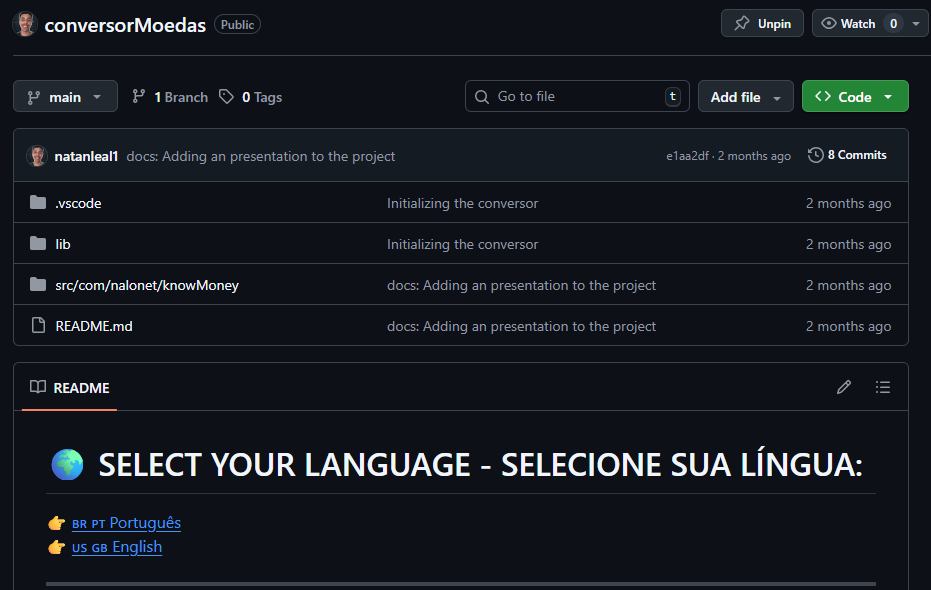

Featured Projects
A selection of practical applications and research projects engineered with my tech stack.

TechConnect
Enterprise web portal built for a fictitious company at Unijorge, featuring dynamic form validation and responsive design.
Analyze Project
Server-Client (Crypto) Project
Python networking application exploring TCP/UDP socket communication protocols and client-server message encryption.
View GitHub Code
Java Currency Converter
Java system consuming live exchange rate APIs in real-time with robust exception handling and clean OOP structure.
View GitHub Code